Oltre 120 attività di arteterapia junghiana, pronte per la tua prossima seduta.
Una guida operativa per psicologi, terapeuti, counselor ed educatori che vogliono far emergere ciò che le parole, da sole, faticano a raggiungere. Ogni attività ha un passo passo chiaro e una guida alla lettura simbolica. Non serve una specializzazione. Non serve saper disegnare.
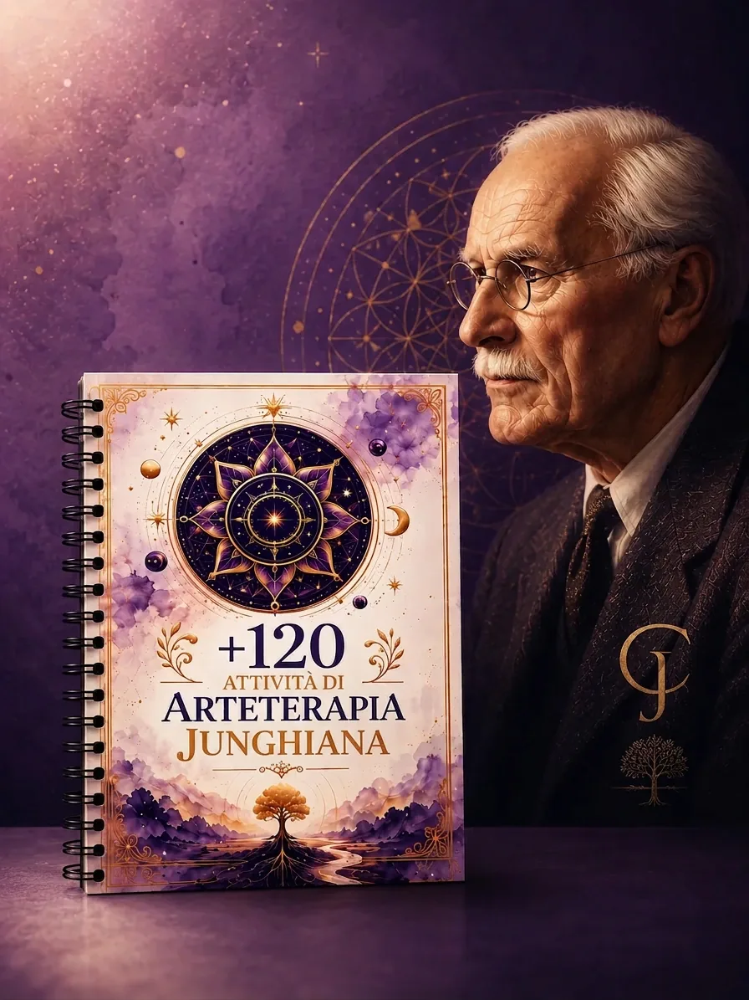
Non è teoria. È materiale che apri e usi già domani.
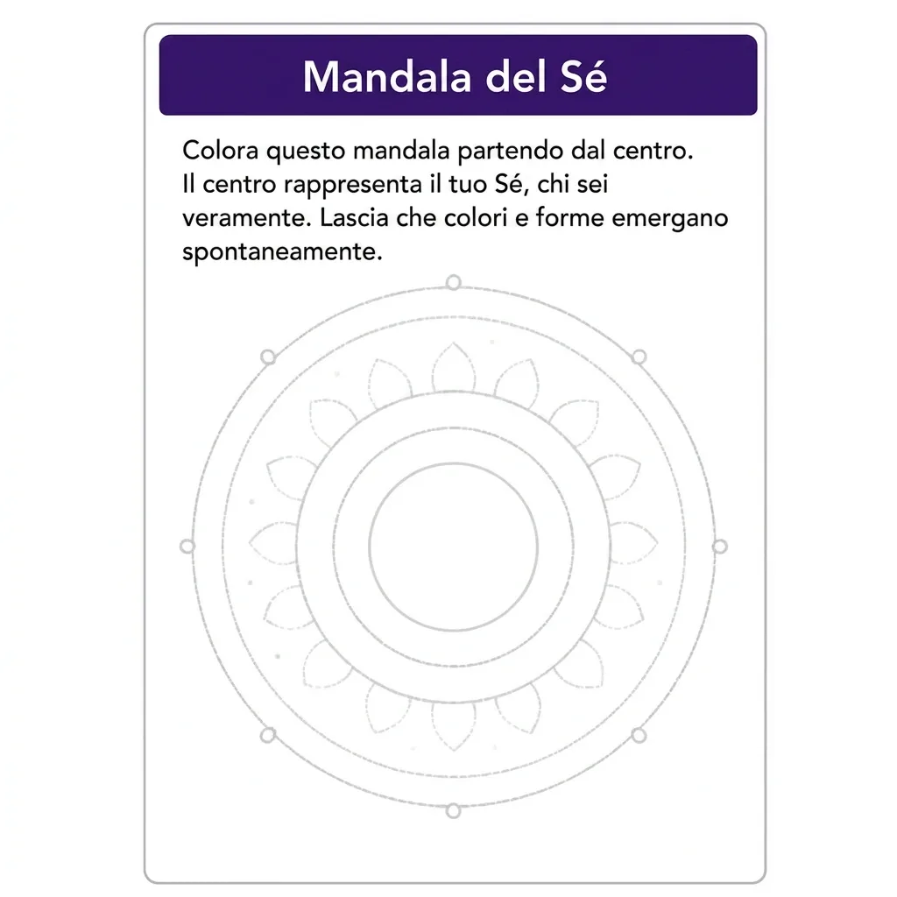
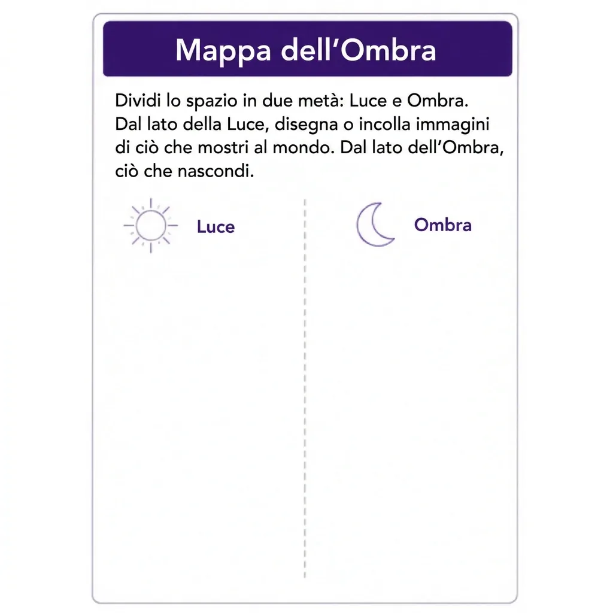
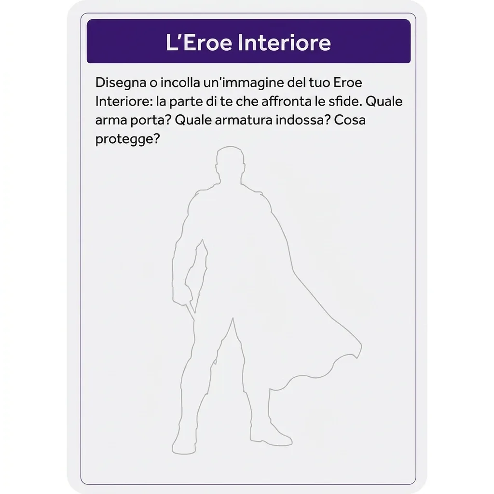
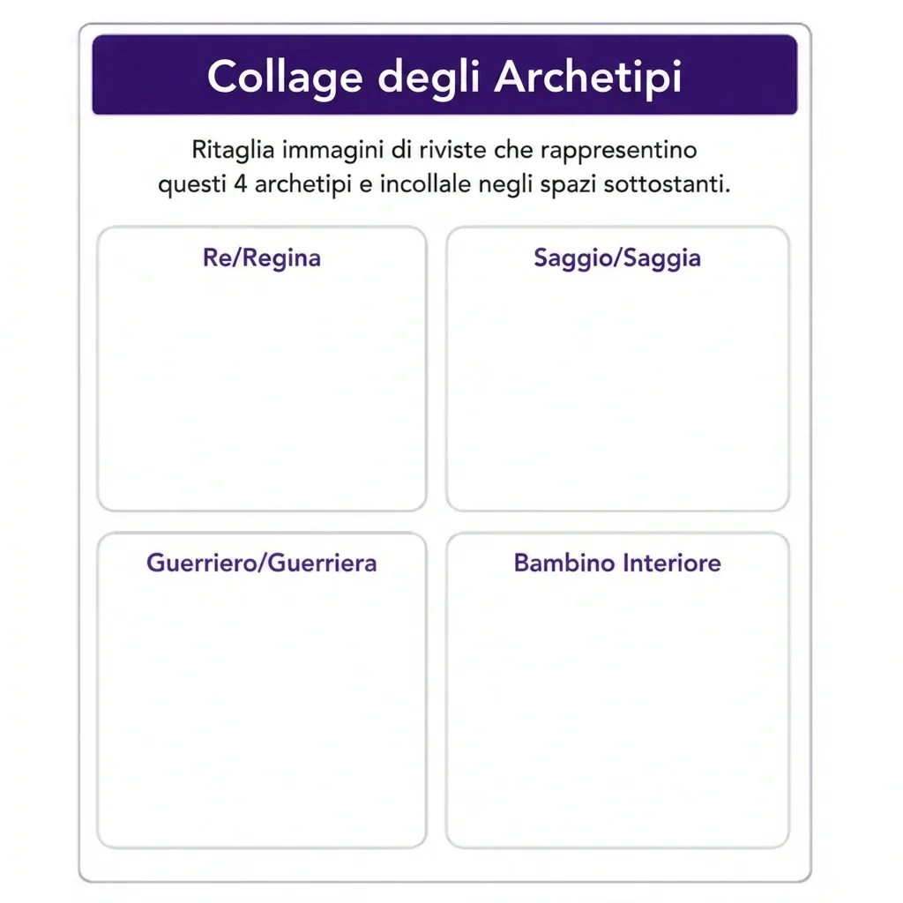
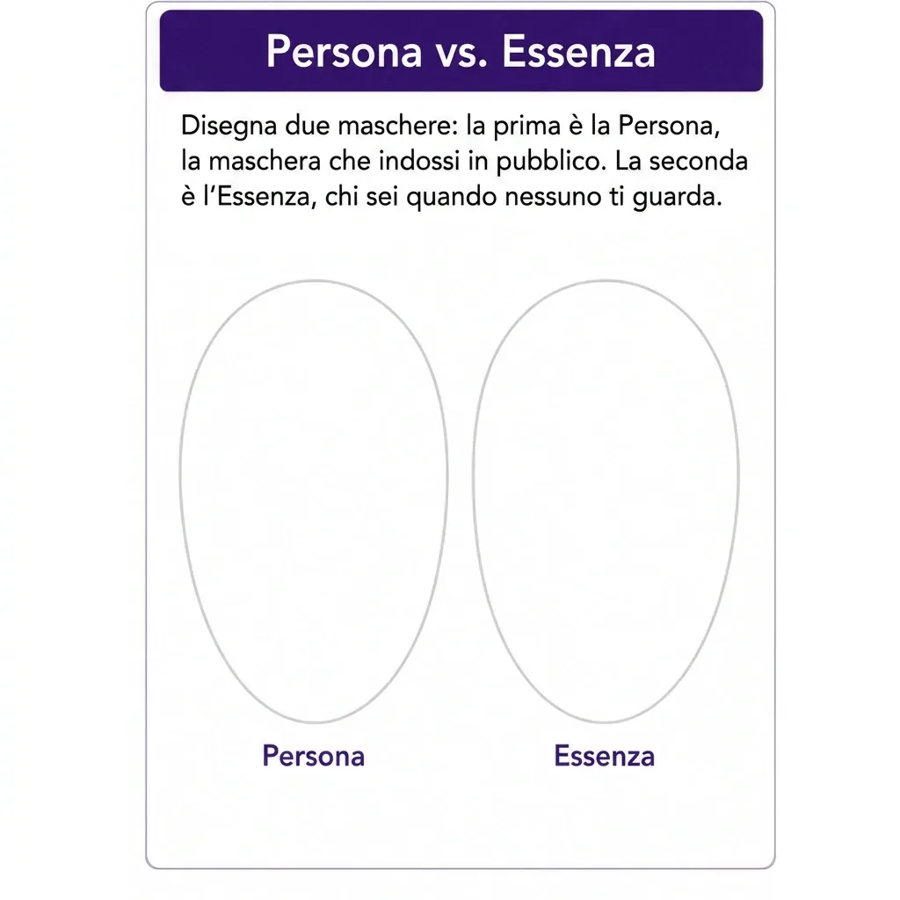
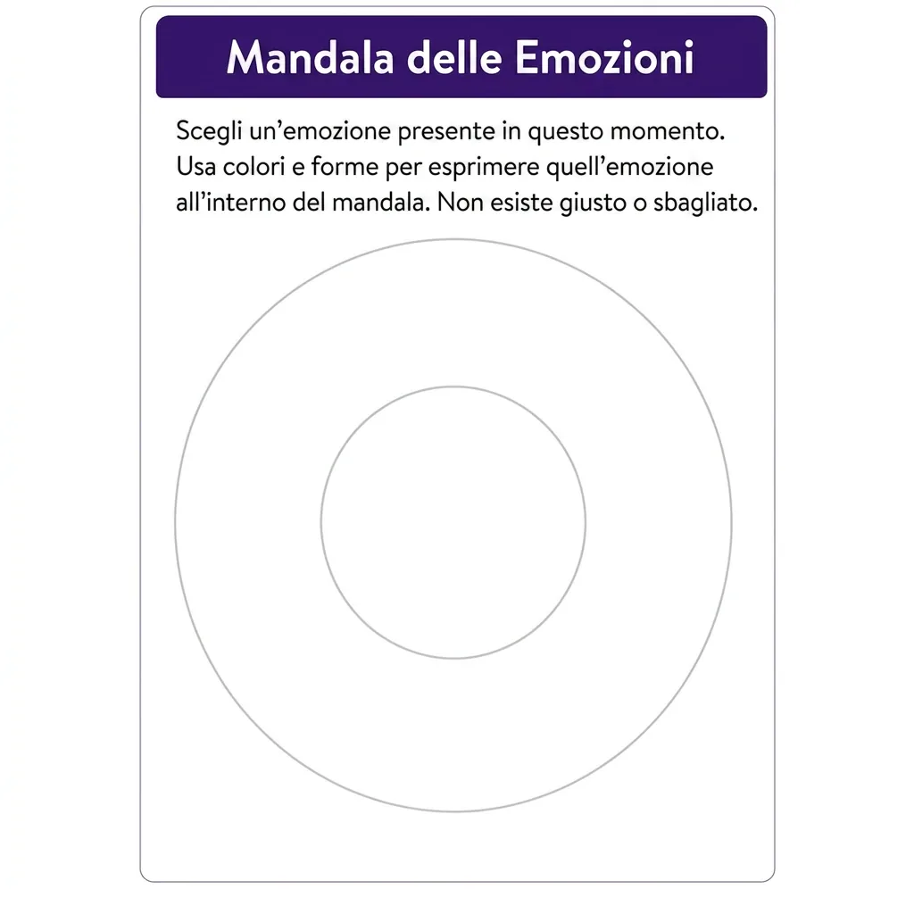
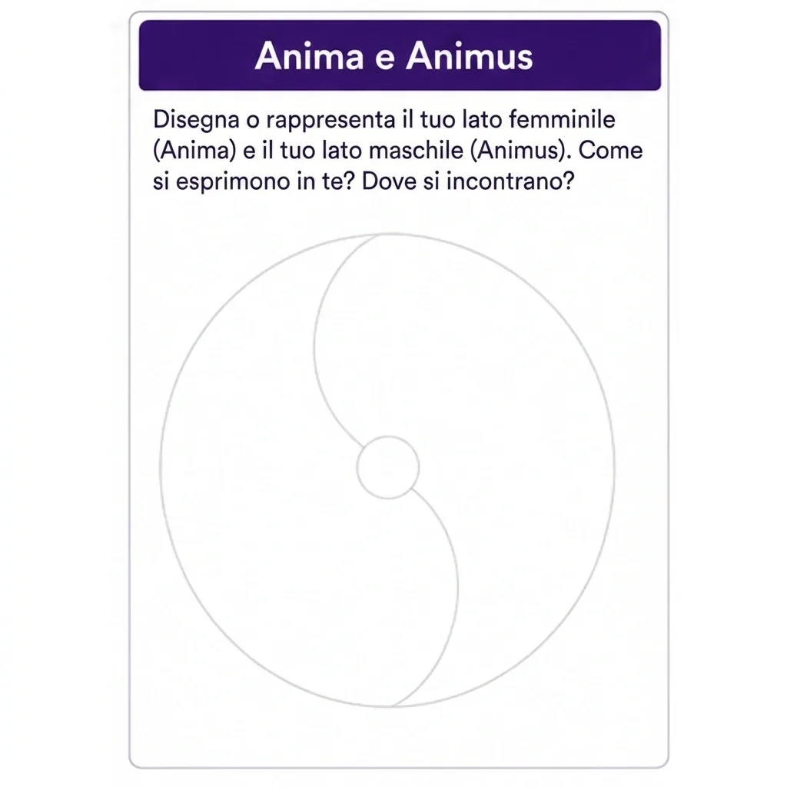
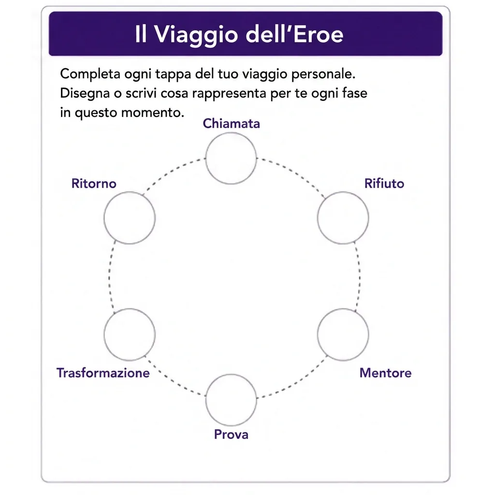
Passo passo visivo per ogni attività — obiettivo, materiali, svolgimento e domande di riflessione. Nessuna preparazione complicata: leggi e conduci.
Organizzata per obiettivo clinico — autoconoscenza, espressione emotiva, integrazione dell'ombra, lavoro sugli archetipi e sul processo di individuazione. Trovi in trenta secondi l'attività giusta.
Guida alla lettura simbolica inclusa — non solo cosa far fare, ma come leggere ciò che emerge dall'immagine, con riferimenti alla psicologia analitica.
Adatta a ogni contesto — seduta individuale, gruppo, aula, percorso a orientamento olistico. Ogni attività ha la variante individuale e quella di gruppo.
L'immagine arriva dove il discorso, da solo, si ferma.
I pazienti si aprono davvero. L'espressione grafica aggira le difese razionali e dà accesso a contenuti che mesi di sola parola faticano a toccare.
Oltre 120 attività pronte all'uso — non devi inventare nulla: scegli, proponi, conduci.
Ognuna con la sua chiave di lettura simbolica, così sai sempre come restituire senso a ciò che emerge.
Non serve talento artistico — né tuo né del paziente. Il valore è nel processo simbolico, non nel risultato estetico.
Ti distingui dai colleghi — porti in seduta uno strumento concreto che pochi sanno usare con metodo.
Applicazioni multiple — clinica, educativa, di gruppo, di crescita personale.
Ricevi tutto via email subito dopo l'acquisto. Nessuna attesa, nessuna spedizione.
Perché non ti serve un master per iniziare oggi.
Questa guida è pensata per te se…
Sei psicologo, psicoterapeuta o counselor e vuoi uno strumento che vada oltre la sola parola.
Sei educatore, formatore o insegnante e cerchi attività creative con una struttura solida alle spalle.
Lavori con un approccio olistico o integrato e vuoi unire Jung ed espressione artistica con metodo.
Pensi che l'arteterapia sia «troppo complessa» o che «serva per forza un master» — e vuoi scoprire che puoi iniziare anche senza.
Non sai disegnare e credi che questo sia un ostacolo (non lo è).
Vuoi anche uno strumento di autoconoscenza per il tuo percorso personale e professionale.
Sei famiglie di attività, oltre 120 esercizi.
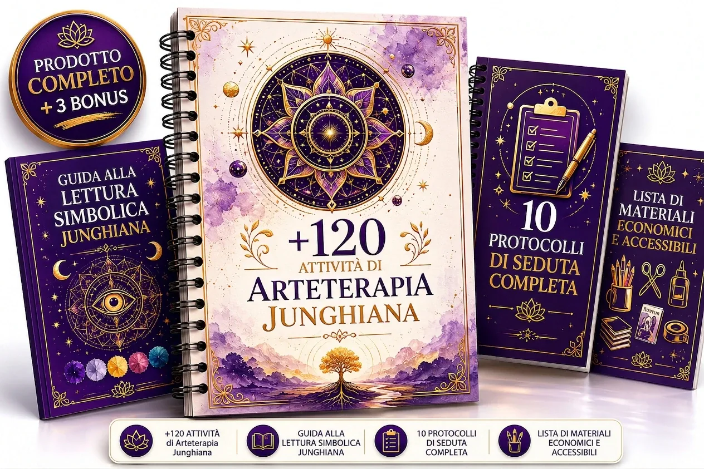
+120 Attività di Arteterapia JunghianaLa Guida Pratica Per Professionisti
Mandala Junghiane
Il cerchio come immagine del Sé. Attività centrate sul processo di individuazione, sull'integrazione e sul ritrovamento di un centro interiore.
Collage Intuitivo
Immagini scelte d'istinto per far emergere l'ombra, la persona e i meccanismi di proiezione, aggirando il controllo razionale.
Disegno degli Archetipi
Dare forma alle figure interiori: anima e animus, l'eroe, la Grande Madre, il Vecchio Saggio. Un dialogo grafico con l'inconscio.
Esercizi sull'Ombra
Attività mirate per riconoscere, dare forma e integrare i contenuti rimossi, con estrema attenzione e gradualità.
Il Viaggio dell'Eroe con l'Arte
Il percorso di trasformazione tradotto in tappe grafiche: chiamata, prova, ritorno. Ideale per momenti di transizione.
Espressione Emotiva Libera
Esercizi non strutturati per dare voce a emozioni che non trovano parole. Perfetti come apertura o sblocco.
Ogni attività include:
- L'obiettivo junghiano dichiarato.
- I materiali necessari (semplici ed economici).
- Il passo passo per condurla.
- Le domande di riflessione da proporre.
- La variante individuale e quella di gruppo.
E in più, 5 bonus inclusi (valore 154 €)

Guida Completa alla Lettura Simbolica
Il riferimento per interpretare colori, forme, posizioni e simboli ricorrenti alla luce della psicologia analitica.
Valore: 37 €Incluso gratis

10 Protocolli di Seduta pronti
Dieci sedute già strutturate dall'apertura alla chiusura: sai esattamente cosa proporre, in che ordine e perché.
Valore: 47 €Incluso gratis

Lista dei Materiali Economici
Tutto ciò che ti serve davvero, con alternative a basso costo. Parti con quello che hai già in studio.
Valore: 19 €Incluso gratis

50 Domande di Riflessione per Archetipo
Cinquanta domande calibrate per archetipo, per approfondire e restituire senso a ciò che emerge.
Valore: 27 €Incluso gratis

Kit di 20 Mandala Stampabili in HD
Venti mandala pronti da stampare in alta definizione, per iniziare subito.
Valore: 24 €Incluso gratis
Chi ha creato questa guida
Rosana Neves
Rosana Neves — specialista in arteterapia a orientamento junghiano. Dopo anni dedicati allo studio della psicologia analitica e alla pratica dell'arteterapia, ha tradotto un sapere spesso teorico e frammentato in un materiale operativo, ordinato e immediatamente applicabile.
La sua convinzione è semplice: per portare l'immagine in seduta con serietà non servono un master né un talento artistico — serve un metodo chiaro.
Questa guida è quel metodo, messo nelle mani di chi lavora ogni giorno con le persone.
Ecco tutto ciò che ricevi oggi
Tutto ciò che ottieni acquistando ora
- Guida con oltre 120 attività di arteterapia junghiana97 €
Mandala, ombra, archetipi, individuazione e molto altro — pronte per la tua prossima seduta, senza saper disegnare.
- Bonus 1 — Guida alla Lettura Simbolica37 €
Il riferimento per interpretare colori, forme e simboli alla luce della psicologia analitica.
- Bonus 2 — 10 Protocolli di Seduta47 €
Dieci sedute già strutturate dall'apertura alla chiusura, pronte da usare.
- Bonus 3 — Lista Materiali Economici19 €
Tutto ciò che ti serve davvero, con alternative a basso costo.
- Bonus 4 — 50 Domande di Riflessione per Archetipo27 €
Cinquanta domande calibrate per archetipo, per approfondire dopo ogni attività.
- Bonus 5 — Kit 20 Mandala Stampabili HD24 €
Venti mandala pronti da stampare in alta definizione, per iniziare subito.
- Accesso a vita + aggiornamenti futuriinclusi
Ricevi tutte le prossime versioni e le nuove attività senza pagare nulla in più. Paghi una volta, usi per sempre.
- Supporto via emailincluso
Dubbi sull'applicazione? Scrivimi direttamente — rispondo personalmente per aiutarti a mettere in pratica il materiale.
- Valore totale reale:251 €
invece di 67 €
A soli
19€
· pagamento unico
Pagamento unico. Accesso immediato e a vita. Nessun rinnovo, nessun addebito ricorrente.
⏳ Offerta di lancio — per chi agisce ora
Il valore reale del pacchetto è 251 €, e questa finestra promozionale può chiudersi in qualsiasi momento senza preavviso. Se stai leggendo fin qui, sai già che questo strumento ti serve.
Pagamento 100% sicuro e crittografato con Carta di credito/debito (Visa, Mastercard), PayPal, Satispay, Postepay, Apple Pay e Google Pay.
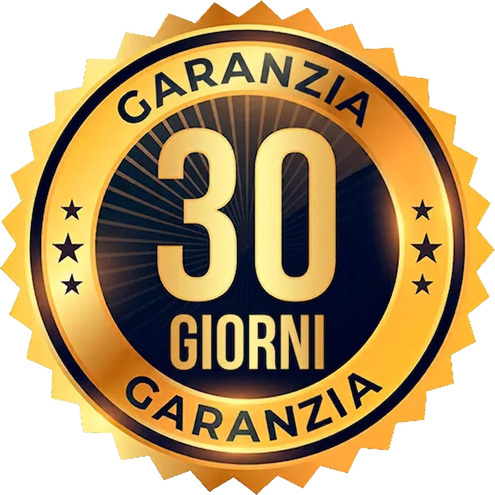
Il rischio è tutto nostro
🛡️ Soddisfatti o Rimborsati — 30 giorni
Prova la guida senza alcun rischio. Hai 30 giorni per esplorare tutte le attività, i protocolli e i bonus. Se per qualsiasi motivo non fa per te, scrivi una mail e ricevi il rimborso completo del 100%, senza domande e senza burocrazia. Il materiale già scaricato resta comunque tuo.
Il rischio è tutto nostro: offriamo questa garanzia perché siamo certi del valore di ciò che trovi all'interno.
Dall'acquisto alla tua prossima seduta, in 3 passi
Acquisti in meno di 2 minuti — scegli il metodo di pagamento e completi in tutta sicurezza.
Ricevi l'accesso immediato via email — nessuna attesa: il materiale è tuo subito dopo il pagamento.
Apri e applichi — scegli l'attività adatta e la porti già nella tua prossima seduta.
Domande Frequenti
No, mai. Le attività si basano sul processo simbolico, non sull'abilità artistica. Valgono per te e per i tuoi pazienti allo stesso modo.
No. La guida è pensata per essere usata da subito con un passo passo chiaro. È uno strumento pratico da integrare nella tua pratica, non un percorso di abilitazione. L'arteterapia in Italia è una professione non regolamentata ai sensi della Legge 4/2013.
Sì. Molte attività sono perfette per contesti educativi e di gruppo, con le varianti già pronte.
Sì. Se lavori con la crescita personale o con percorsi integrati, trovi materiale coerente e ben strutturato.
No. Bastano materiali semplici che probabilmente hai già. C'è anche un bonus con la lista economica.
Via email, subito dopo l'acquisto. Accesso a vita, con gli aggiornamenti futuri inclusi.
Hai 30 giorni di garanzia: rimborso del 100%, senza burocrazia. Il rischio è nostro.
Assolutamente sì. Molti professionisti iniziano proprio da sé, sperimentando le attività sul proprio percorso prima di proporle.
Oltre 120 attività di arteterapia junghiana, pronte per la tua prossima seduta. Senza una specializzazione, senza saper disegnare.
Accesso immediato · Pagamento unico · Garanzia 30 giorni · Pagamento sicuro (Carta, PayPal, Satispay). A soli 19€.